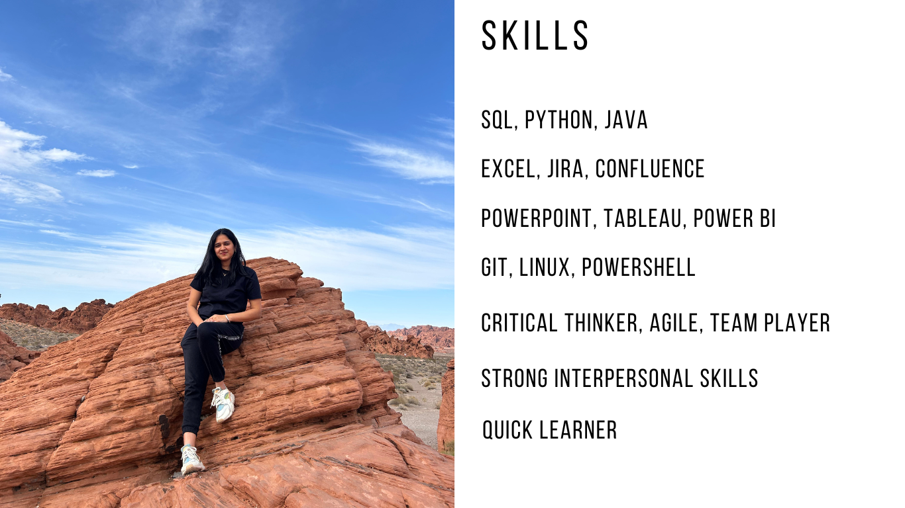

SQL
Covid-19 Data Exploration with SQL.
Skills used: Joins, CTE's, Temp Tables, Windows Functions, Aggregate Functions, Creating Views, Converting Data Types
A graduate student of Masters of Business Analytics at Saint Peter's University and with over 5 years of experience in software engineering, I am now upskilling in the analytics domain and documenting my work and projects here. Combining solid academic foundations with hands-on experience in software development and data analytics, I am keen on advancing in the fields of software engineering and analytics, bringing innovative solutions and expertise to the forefront.

Covid-19 Data Exploration with SQL.
Skills used: Joins, CTE's, Temp Tables, Windows Functions, Aggregate Functions, Creating Views, Converting Data Types


Kaggle: Exploratory Data Analysis of Video Game Sales.
Skills used: Statistics, Python, Numpy, Pandas, Visualization
The LNMIIT GPA 9.34/10